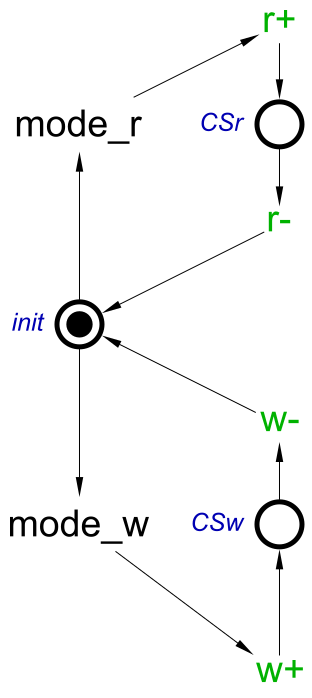
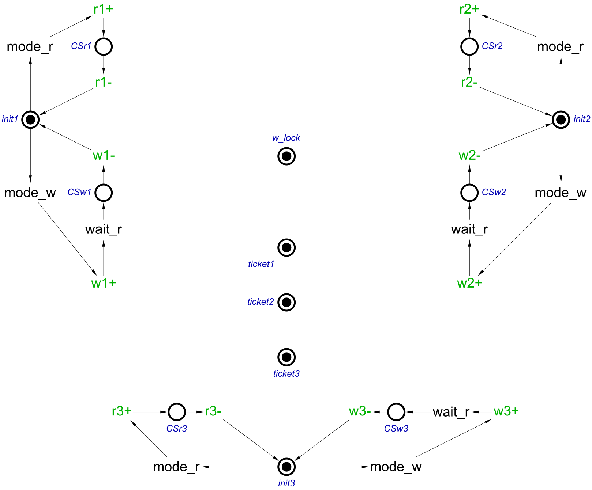

Table of Contents
Modelling with STGs: Writer-biased read/write lock
Read/write lock
A concurrency primitive called read/write lock (or RW lock for short) is often used to control access to a shared resource that can be read concurrently but written exclusively. Each client, when requesting access, specifies whether it is for writing or for reading – read/read concurrency is allowed, but read/write and write/write concurrency is forbidden. A client can be modelled by the following STG:

Note that:
- The client’s decision to enter reading or writing mode is modelled as a free choice between transitions
mode_randmode_w. These transitions are necessary: if they were contracted, the choice betweenr+andw+would be affected by the presence of tokens on other places (not shown in the above STG, but see the one below), making the choice non-free and thus changing the semantics in an undesirable way. - The actions of acquiring and releasing the RW lock in a particular mode must alternate, which is naturally modelled by the directed actions
r+andr-(in the read mode) andw+andw-(in the write mode). This way the alternation of acquiring and releasing actions corresponds to the consistency of the STG.
Idea of implementation
Suppose there are N clients, and from time to time some client indicates that it wishes to read or to write the resource. We create N ‘tickets’. A reader needs a single ticket to enter its critical section, whereas a writer needs all N tickets to enter its critical section. Having finished using the resource, the client returns the ticket(s) it had been granted, so that other clients can get them and access the resource. For example, the following STG models an RW lock for two clients.

Unfortunately the above implementation is prone to writer starvation – the scenarios when there are always some readers executing their critical sections, and hence a writer is blocked for a long time or even indefinitely. To prevent such scenarios, new readers should be prevented from entering their critical sections if there is a waiting writer. That is, a writer must first acquire a usual (i.e. non-RW) lock (competing with other writers) and indicate that there is a waiting writer to prevent new readers from entering their critical sections. Then this writer has to wait for all the existing readers to exit their critical sections, at which point it can acquire N tickets and enter its critical section. Such an implementation is called a writer-biased RW lock. A client’s model now becomes as follows.

Note that the writer now has an extra transition wait_r to wait for the existing readers to exit their critical sections – this happens when all N tickets have been returned and this transition can consume them.
Exercise 1: Modelling a writer-biased RW lock
The following STG provides a skeleton for the Writer-Biased RW lock for three clients (three is the minimum number of clients for the model to be interesting). Note that besides the places modelling tickets, there is a place w_lock modelling a lock for which the writers compete – in the final STG this place will become an arbitrating choice between transitions w1+, w2+ and w3+.

Download this STG stg-rw_biased_template.work (4 KiB) and complete the model by providing the necessary arcs between the transitions of the clients and the places w_lock and those modelling the tickets.
Exercise 2: Simulation and verification
Simulate your model. Try to re-create the following scenarios:
- All three clients simultaneously access the resource for reading.
- The first and second clients keep sending read requests and keep entering and exiting their critical sections in such a way that there is always at least one reader accessing the resource. Meanwhile, the third client makes a write request but cannot enter its critical section as there is always an active reader. (This scenario exhibits writer starvation and should be impossible in a Writer-Biased RW lock.)
- The first client accesses the resource for reading. Then the second client makes a write request and starts to wait for the first client to exits its critical section. At this point the third client sends a read request but is prevented from entering the critical section. Eventually the first client exits its critical section and immediately sends another read request – but it is prevented from entering its critical section due to a waiting writer. Then the writer enters its critical section. After the writer exits its critical section, both waiting readers enter their critical sections.
Verify the following properties of the model:
- Deadlock-freeness.
- The corresponding acquiring and releasing actions alternate in every execution. Hint: this is Consistency.
- There is a reachable state where all clients are accessing the resource for reading. Hint:
$P"CSr1" & $P"CSr2" & $P"CSr3". Play the computed trace leading to such a state in the simulator. - Whenever any client is accessing the resource for reading, no client (not even the reading client itself) is accessing it for writing. Hint:
($P"CSr1" | $P"CSr2" | $P"CSr3") & ($P"CSw1" | $P"CSw2" | $P"CSw3"). - Whenever a client is accessing the resource for writing, no other client is accessing it for writing, and no client (not even the writing client itself) is accessing it for reading. This can be formulated as three properties, one per client. Hint:
for the first client - $P"CSw1" & ($P"CSw2" | $P"CSw3" | $P"CSr1" | $P"CSr2" | $P"CSr3"); for the other clients two similar properties can be written. - Whenever there is a waiting or active writer, no reader is in its critical section. You can use the construction, e.g.
$S"w1"to check that actionw1is asserted, i.e. the first writer is either waiting or active. Hint:($S"w1" | $S"w2" | $S"w3") & ($P"CSr1" | $P"CSr2" | $P"CSr3"). This property should not hold – play the violation trace in the simulator and explain why this is the case. - Whenever there is a waiting or active writer (i.e. there is no token on
w_lock), no reader can enter its critical section (i.e. the transitionsr1+,r2+andr3+are disabled). You can use the construction, e.g.@T"r1+"to check the enabledness of transitionr1+. Hint:($S"w1" | $S"w2" | $S"w3") & (@T"r1+" | @T"r2+" | @T"r3+"); alternatively, ~$P"w_lock" & (@T"r1+" | @T"r2+" | @T"r3+").
===== Feedback =====
- As discussed in https://www.dokuwiki.org/plugin:include#controlling_header_size_in_included_pages, by default, the headers in included pages start one level lower than the last header in the current page. This can be tweaked by adding an empty header above the include:\\
====== ====== {{page>:tutorial:feedback&inline}} - For offline help generation the content of
feedbackpage should be temporary wrapped in<WRAP hide>. Note that the headers still propagate to the table of contents even if inside the hidden wrap. Therefore the Feedback title needs to be converted to something else, e.g. to code by adding two spaces in front.